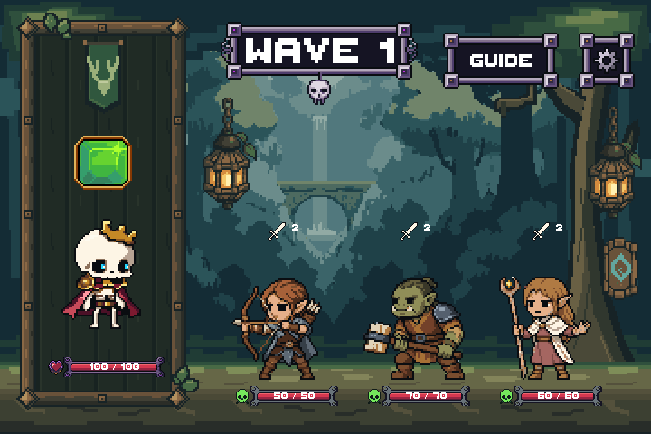
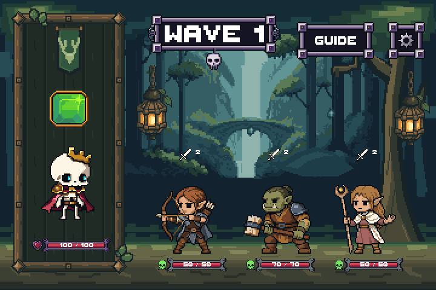
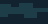
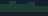
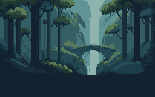
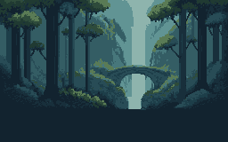

Checkpoint 2 · actual Unity art-only previewDepth first, decoration second
A distant enchanted bridge and waterfall, broad tree layers and two quiet wisps. The flat fighting area, characters, portrait and shared controls retain their existing pixels and placement.
Before · same Unity review scene

Revised · actual Unity capture

Kept unchangedLarge foreground trees and canopy, two upper lanterns, flat ground, Rattlebones and Forest cast, portrait frame, HP and countdowns, and shared controls. The lower HUD and all existing production files are untouched.
Rebuilt at this checkpointOne far-forest support layer, three matching depth repeats, and one padded wisp used twice. The loose upper rune tag is omitted. Board and portrait frame rebuilds remain their own review checkpoints.
Background without fighter samples
Native asset list · 1×

Depth_CanopyRepeat
48×24 · 2 colorsDepth_SideRepeat
52×160 · 3 colors
Depth_UnderstoryRepeat
48×16 · 3 colorsDistant_Wisp
12×16 · 4 colors
Far_EnchantedSanctuary
256×160 · 11 colorsPixelLab source and LibreSprite cleanup · 2×
Raw PixelLab source

Verification
Unity compilation passed. Explicit preview test passed and exited 0. Exact 2× capture equality, whole-pixel alignment, no clipped standalone sprites, zero portrait-mask spill, and 8,125 unchanged protected files. The preview contains static readability samples, not live combat. No Android or real-device testing is claimed.
PixelLab: one source, 9 generations. LibreSprite: five editable native documents, exact export/reopen checks. A first-pass mask-extent test error and a later shutdown anomaly are documented; the final rerun passed cleanly.
Earlier cleaner-board direction study · Stop for review here; next checkpoint is the portrait frame. No merge.